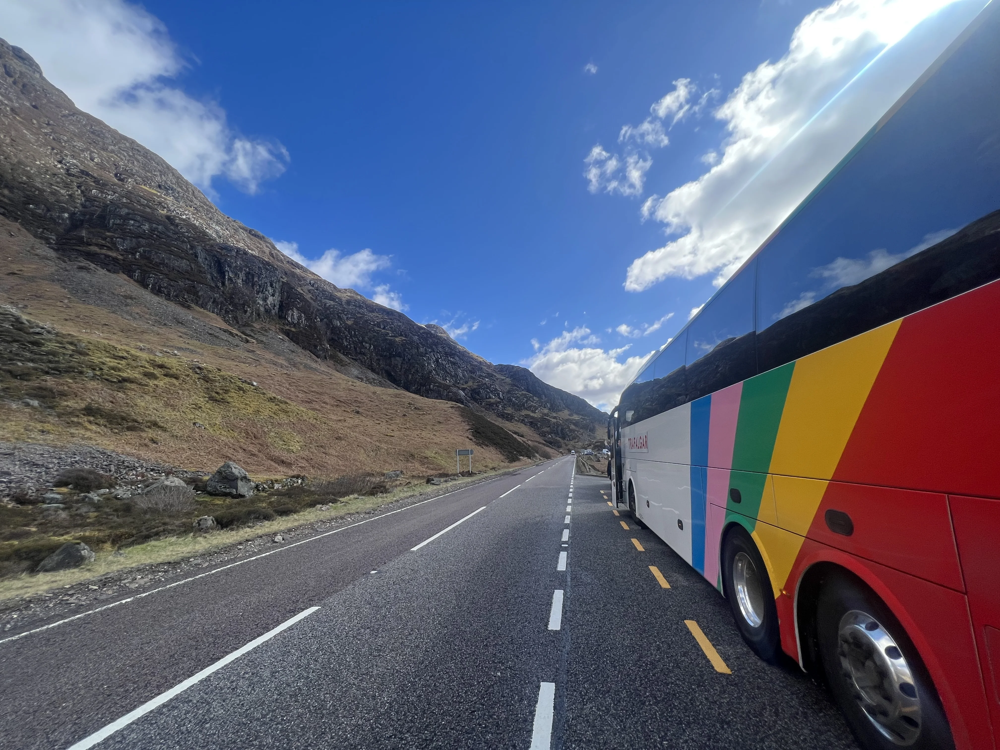
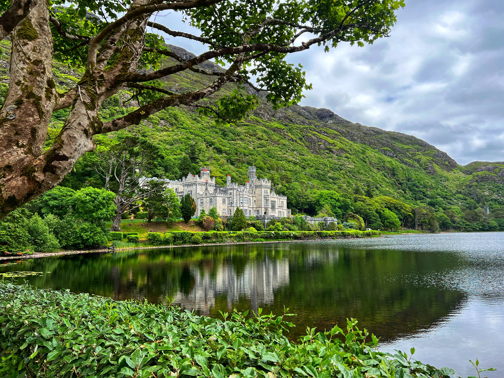
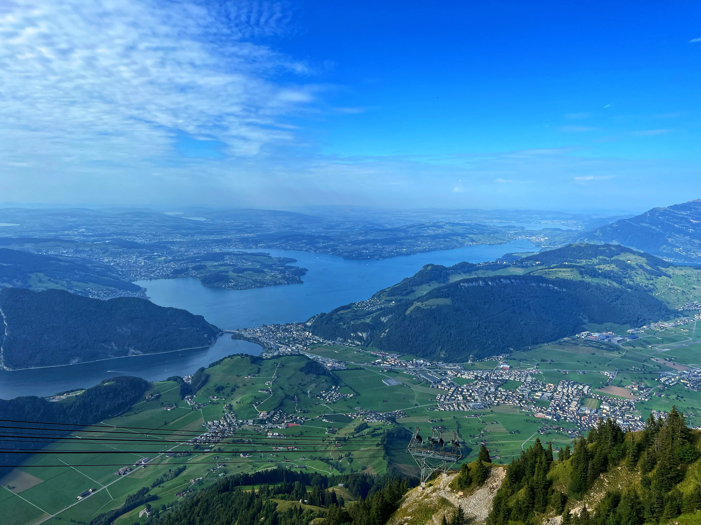
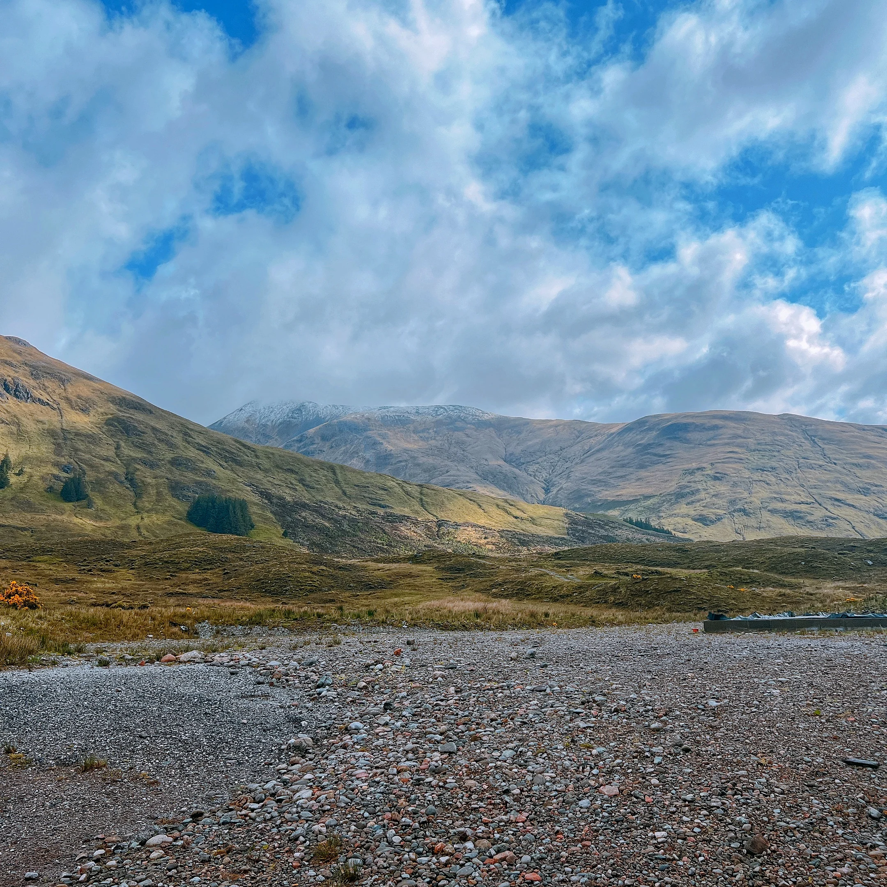
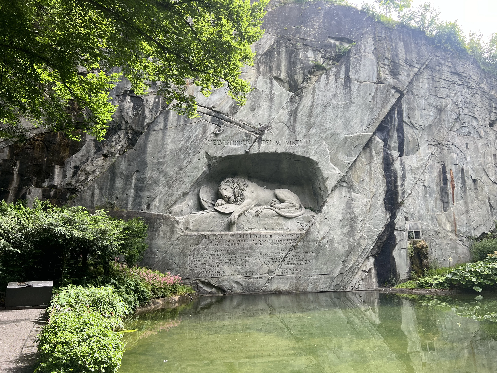
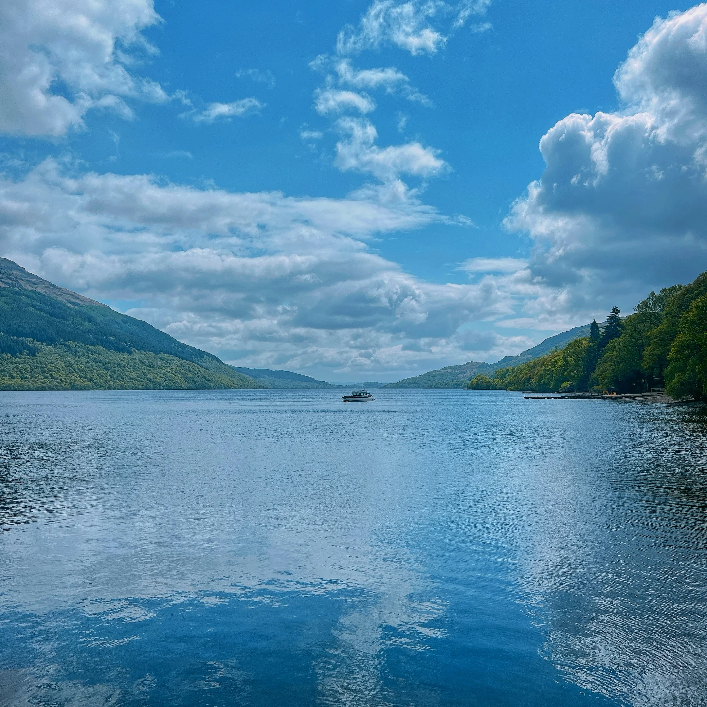
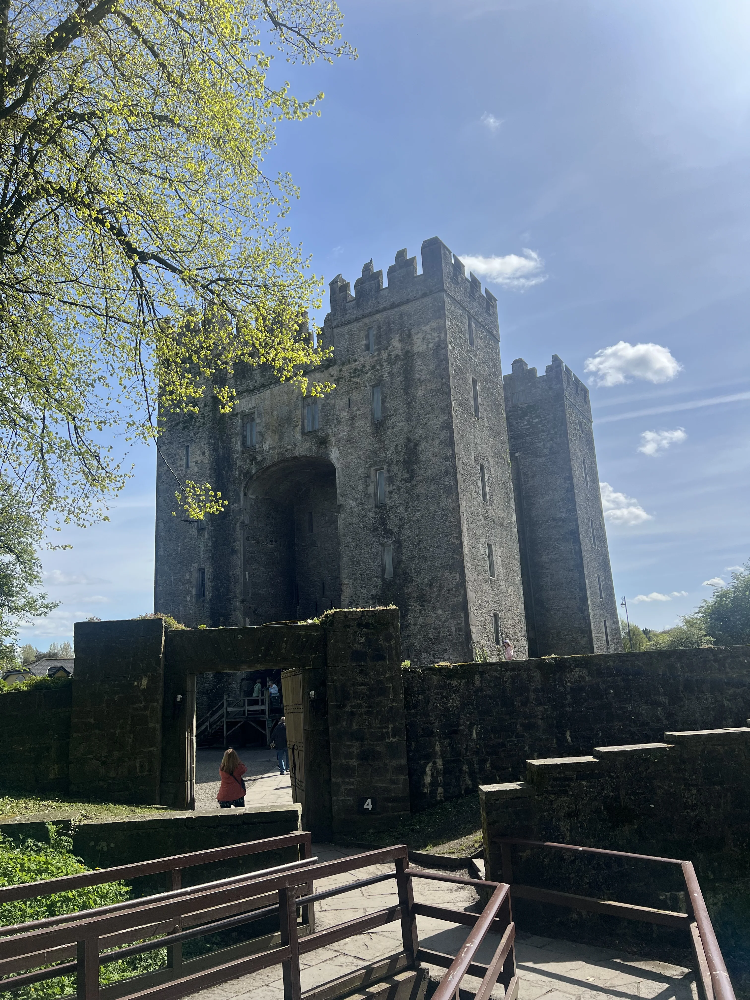

Well-paced tours, clearly led.
Clear timing, steady communication and practical guidance from day one. You will see a lot in a short space of time, with the logistics handled clearly so you can enjoy each stop.
Departure pages ready before you travel.
If you are travelling on one of the departures below, you can open the tour guide for my practical notes before you leave, or use the official Trafalgar page for the full itinerary and trip overview.
Best of Ireland & Scotland
A journey through Celtic Ireland and Scotland, starting in Dublin and giving a real taste of Irish cities and countryside before continuing through Northern Ireland and finishing in Scotland, with its Highlands, islands and great cities.
Joel’s tour tips → Official Trafalgar site →Britain & Ireland Highlights
A real taste of the British Isles at their most iconic, taking in cities such as London, York, Glasgow, Edinburgh, Belfast, Dublin, Waterford and Cardiff, along with standout sights like Edinburgh Castle and Stonehenge.
Joel’s tour tips → Official Trafalgar site →More tour pages
As future departures are confirmed, this stays the main place to find the practical pages linked to each tour.

Experienced support, so your journey feels smoother from day one.
My background spans more than a decade across tourism and hospitality, with most of that time focused on leading guided journeys across Europe.
My approach is straightforward: clear communication, calm organisation and helping people feel in safe hands from the first day onward.
I work primarily across the UK, Ireland and continental Europe, supporting tours that balance practical coordination with local insight and a well-paced travel experience.
This site gives you a clearer starting point before departure: the useful details in one place, with a little more personality than a standard travel email.

The best tours usually feel well paced, clearly led and easy to settle into.
A good tour should feel well paced, well explained and easy to settle into. That usually comes down to the small things being handled properly: clear timing, steady communication and knowing when to simplify rather than overcomplicate.
Whether it is a scenic drive through Glencoe, a busy city arrival or a practical departure morning, the aim is always the same: help people feel relaxed, informed and able to enjoy where they are.
Where I regularly work.
I work across a range of European touring regions, with extensive experience leading journeys in the British Isles as well as multi-country itineraries throughout continental Europe.
UK & Ireland
A strong touring tradition, varied landscapes and detailed historical context shape many of the journeys I lead here.
Europe
Multi-country itineraries across Western and Central Europe, combining major cultural centres with smaller regional destinations.
Eastern Europe
Distinct cultural identity, layered history and a growing range of touring experiences across both established and emerging destinations.



What you can expect before departure.
If you are travelling on an upcoming departure that I am leading, you will usually receive a detailed welcome email from me around five days before the tour starts.
Main point of reference
Your booking documents and operator communications remain the main source for itinerary details and operational updates.
Welcome email
This will include practical information relevant to your specific journey, along with any useful preparation notes before departure.
Additional guidance
This site may also include general travel notes and tour-specific preparation pages where useful.
Simple purpose
The aim is not to overload you with information, just to make the week before departure feel clearer and more straightforward.
Stay in touch after the road
If you'd like occasional updates, future tour notes and a few useful messages from the road, you can join the mailing list here.
Open the signup page →A little more of the places behind the journeys.
A few of the stops that tend to stick: some big, some quieter, all better once you know what you are looking at.



Stay connected.
The website is still the main place for practical tour information. These are simply easy ways to stay connected outside the tour itself.
Instagram
Find me on Instagram.
Facebook
Connect with me on Facebook.
WhatsApp
Message me directly on WhatsApp.